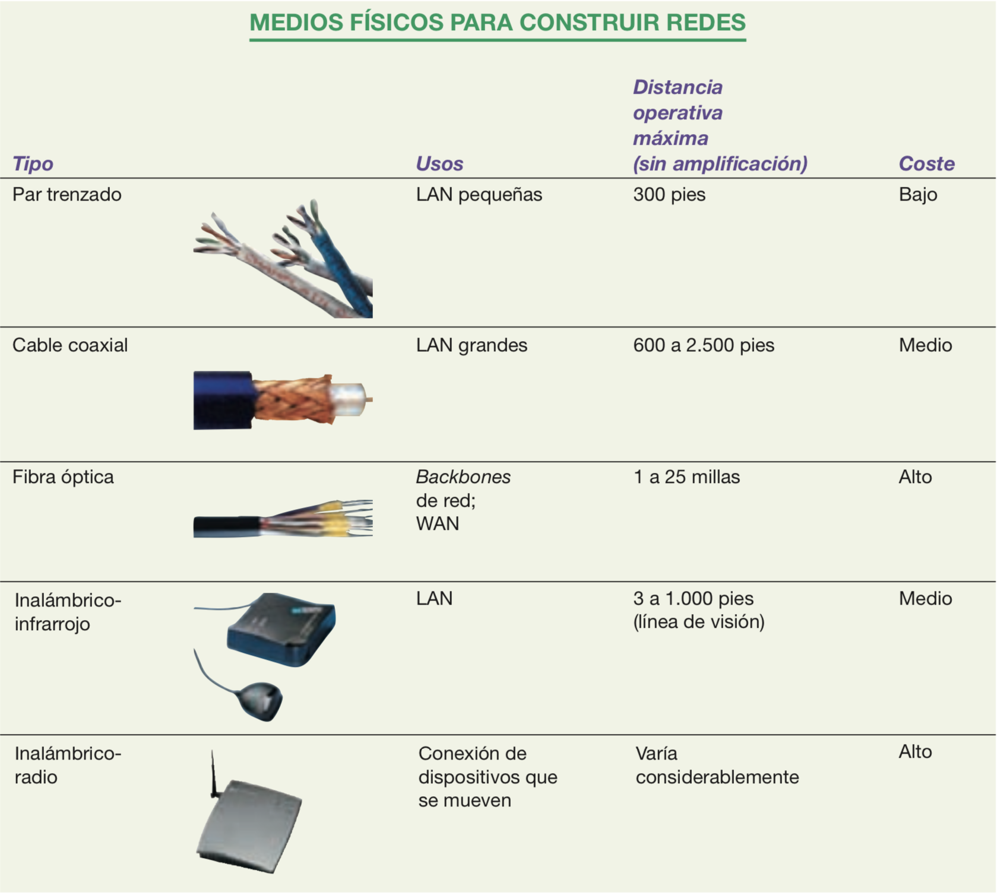

Medios de transmisión
Para que conozca algunas características de los medios de transmisión, puede acceder a este recurso para que reconozca estos medios.
A continuación una tabla resumen extraída del libro de Beekman (2005):

"Los distintos tipos de redes se construyen con diferentes medios físicos, que pueden jugar un enorme papel en el rendimiento global de la red." (Beekman, 2005)